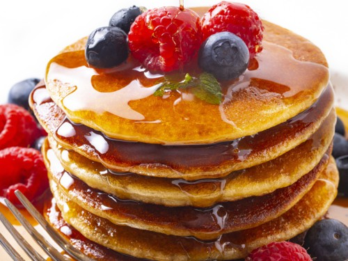

Pancakes

What You Will Be Eating
A pancake is a flat cake, often thin and round, prepared from a starch-based batter that may contain eggs, milk and butter and cooked on a hot surface such as a griddle or frying pan, often frying with oil or butter. It is a type of batter bread.
Ingredients
- 1½ cups all-purpose flour
- 1 tablespoon white sugar
- 3½ teaspoons baking powder
- ¼ teaspoon salt, or more to taste
- 1¼ cups milk
- 3 tablespoons butter, melted
- 1 egg
Cooking Steps
- Sift flour, baking powder, sugar, and salt together in a large bowl. Make a well in the center and add milk, melted butter, and egg; mix until smooth.
- Heat a lightly oiled griddle or pan over medium-high heat. Pour or scoop the batter onto the griddle, using approximately 1/4 cup for each pancake; cook until bubbles form and the edges are dry, about 2 to 3 minutes. Flip and cook until browned on the other side. Repeat with remaining batter.
Return Home